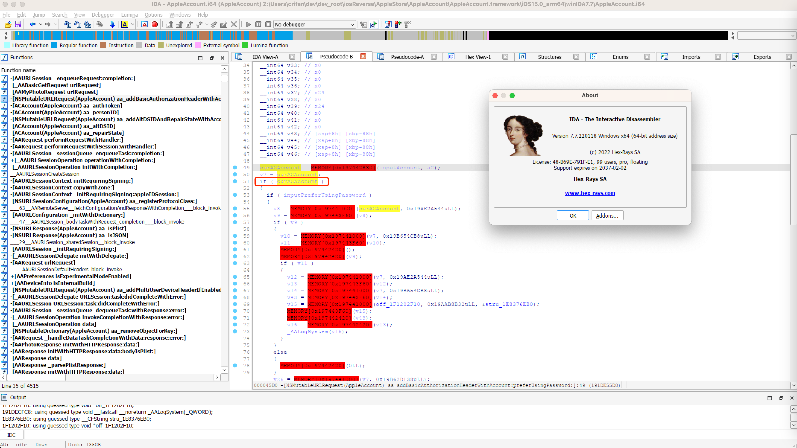
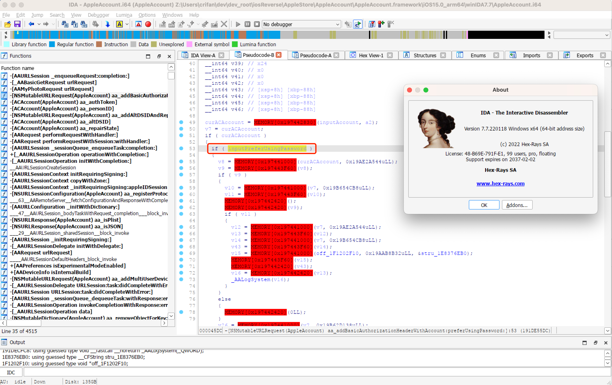
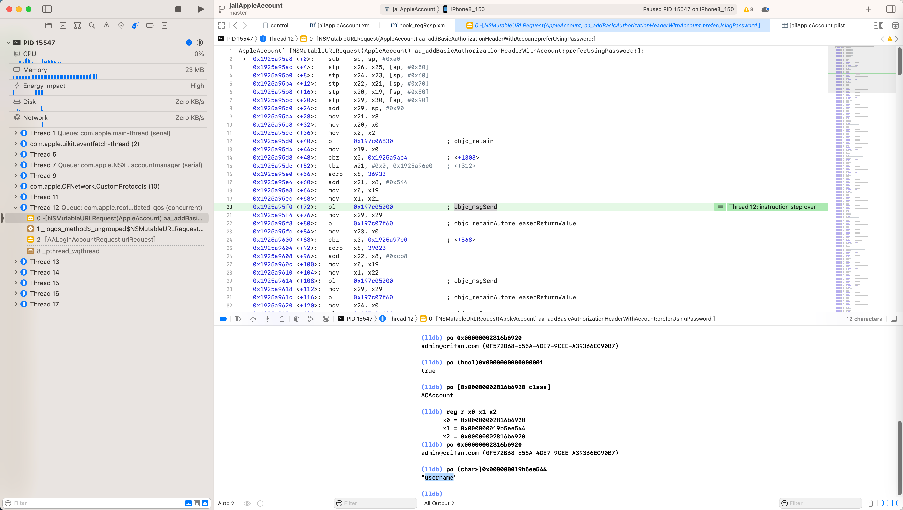

从汇编反推代码逻辑
iOS逆向期间，对于（静态分析或动态调试）ARM汇编代码时，直接看ARM汇编代码，肯定是很难搞定代码逻辑的，尤其是代码很多的时候。
但是，如果熟悉ARM汇编指令本身，和一些常见的逻辑，则可以：
对于部分简单的逻辑，还是能看出来的
此处以具体例子来解释说明
对于Xcode去调试iOS的ObjC函数：
AppleAccount`-[NSMutableURLRequest(AppleAccount) aa_addBasicAuthorizationHeaderWithAccount:preferUsingPassword:]:
-> 0x1925a95a8 <+0>: sub sp, sp, #0xa0
0x1925a95ac <+4>: stp x26, x25, [sp, #0x50]
0x1925a95b0 <+8>: stp x24, x23, [sp, #0x60]
0x1925a95b4 <+12>: stp x22, x21, [sp, #0x70]
0x1925a95b8 <+16>: stp x20, x19, [sp, #0x80]
0x1925a95bc <+20>: stp x29, x30, [sp, #0x90]
0x1925a95c0 <+24>: add x29, sp, #0x90
0x1925a95c4 <+28>: mov x21, x3
0x1925a95c8 <+32>: mov x20, x0
0x1925a95cc <+36>: mov x0, x2
0x1925a95d0 <+40>: bl 0x197c06830 ; objc_retain
0x1925a95d4 <+44>: mov x19, x0
0x1925a95d8 <+48>: cbz x0, 0x1925a9ac4 ; <+1308>
0x1925a95dc <+52>: tbz w21, #0x0, 0x1925a96e0 ; <+312>
0x1925a95e0 <+56>: adrp x8, 36933
0x1925a95e4 <+60>: add x21, x8, #0x544
0x1925a95e8 <+64>: mov x0, x19
0x1925a95ec <+68>: mov x1, x21
0x1925a95f0 <+72>: bl 0x197c05000 ; objc_msgSend
0x1925a95f4 <+76>: mov x29, x29
0x1925a95f8 <+80>: bl 0x197c07f60 ; objc_retainAutoreleasedReturnValue
0x1925a95fc <+84>: mov x23, x0
...
0x1925a96e0 <+312>: adrp x8, 38984
0x1925a96e4 <+316>: add x21, x8, #0x138
0x1925a96e8 <+320>: mov x0, x19
0x1925a96ec <+324>: mov x1, x21
0x1925a96f0 <+328>: bl 0x197c05000 ; objc_msgSend
先分别介绍，局部的，部分的，ARM汇编代码，对应的原始的ObjC的代码的逻辑。
介绍具体逻辑之前，先贴出传入参数：
(lldb) reg r x0 x1 x2 x3
x0 = 0x0000000282da0150
x1 = 0x000000019bc11ada
x2 = 0x00000002816b6920
x3 = 0x0000000000000001
(lldb) po 0x0000000282da0150
<NSMutableURLRequest: 0x282da0150> { URL: https://setup.icloud.com/setup/signin/v2/login }
(lldb) po (char*)0x000000019bc11ada
"aa_addBasicAuthorizationHeaderWithAccount:preferUsingPassword:"
(lldb) po 0x00000002816b6920
xxx@yyy.zzz (0F...-655A-4DE7-9CEE-A3...7)
(lldb) po [0x00000002816b6920 class]
ACAccount
(lldb) po (bool)0x0000000000000001
true
其对应着，iOS中ObjC代码的调用：
objc_msgSend(
<NSMutableURLRequest: 0x282da0150> { URL: https://setup.icloud.com/setup/signin/v2/login },
"aa_addBasicAuthorizationHeaderWithAccount:preferUsingPassword:",
<ACAccount: xxx@yyy.zzz (0F...-655A-4DE7-9CEE-A3...7)>
true
)
其中的：
0x1925a95c4 <+28>: mov x21, x3
0x1925a95c8 <+32>: mov x20, x0
是去保存传入的参数：
x3=x21=0x1=truex0=x20=<NSMutableURLRequest: 0x282da0150> { URL: https://setup.icloud.com/setup/signin/v2/login }
0x1925a95cc <+36>: mov x0, x2
意思是：
x0=x2=<ACAccount: xxx@yyy.zzz (0F...8-655A-4DE7-9CEE-A...7)>
0x1925a95d0 <+40>: bl 0x197c06830 ; objc_retain
0x1925a95d4 <+44>: mov x19, x0
意思是：
objc_retain(<ACAccount: xxx@yyy.zzz (0F...8-655A-4DE7-9CEE-A...7)>)
=> x0 = x19 = retain后的ACAccount
-》原始代码逻辑，暂时可以写成类似的意思：
curACAccount = objc_retain(inputACAccount)
尤其是，下面这句：
0x1925a95d8 <+48>: cbz x0, 0x1925a9ac4 ; <+1308>
其实容易看出是：
cbz = Compare and Branch on Zero = 去比较，如果是0，就跳转
此处意思是：
去比较x0=retain后的ACAccount，即传入的参数ACAccount，是否是0，如果是，则就跳转
-》则此时，就容易反推出，原始的（iOS的ObjC）代码的逻辑，就是：
去判断传入参数ACAccount，是否是空
-》写成伪代码，C代码，就类似于：
curACAccount = objc_retain(inputACAccount)
if (curACAccount) {
// next line = <+52>: do normal process account
} else {
// <+1308>: report error or some other process
}
类似的，IDA Pro (v7.7)中，反编译后的代码=伪代码，也是类似的写法：

如此，就可以：
一点点反推出，原始代码的逻辑和含义了。
而其实可以继续分析原始代码逻辑：
0x1925a95dc <+52>: tbz w21, #0x0, 0x1925a96e0 ; <+312>
ARM汇编代码本意：
tbz=TBZ=Test bit and Branch if Zero = 测试某个位，看看是否是0，如果是0，就跳转
注：此处突然明白，此处也是去判断 某个内容，是否为0，为何没用上面的：
- cbz = Compare and Branch on Zero
而非要用另外一个汇编指令：
- tbz=TBZ=Test bit and Branch if Zero
其中的区别点在于：
- cbz是Compare，普通的内容
- tbz=Test bit，是测试比较某个bit位
- 对应着此处代码中，用的寄存器是w21
- 根据之前经验，X是64位寄存器写法，比如X21
- 而如果改用w的32位寄存器写法，则往往意味着：此时的原始代码变量是个bool布尔变量了
- bool变量的底层实现，就可以：只用1个bit位，即可表示
- 所以此处用tbz，而不是用cbz
- bool变量的底层实现，就可以：只用1个bit位，即可表示
- 而如果改用w的32位寄存器写法，则往往意味着：此时的原始代码变量是个bool布尔变量了
所以，此处w21 = 是个bool变量 = 前面的x21 = x3 = 传入参数的：0x1=true
所以此处含义就是：
if(inputPreferUsingPassword) {
// next line=<+56>: some logic like: login using password
} else {
// jump to line <+312>: some logic like: login not using password = using auth or something else
}
如此，即可反推出，原始的代码的逻辑了。
类似的，IDA中的伪代码，其实就是如此一点点反推出原始代码的逻辑，然后实现反编译的
此处IDA Pro v7.7的反编译结果，也就是上述推测出的逻辑和写法：

此处贴出，这部分代码的对应的，IDA Pro的伪代码：
void __cdecl -[NSMutableURLRequest(AppleAccount) aa_addBasicAuthorizationHeaderWithAccount:preferUsingPassword:](
id a1,
SEL a2,
id inputAccount,
bool inputPreferUsingPassword)
{
__int64 curACAccount; // x0
...
curACAccount = MEMORY[0x197442830](inputAccount, a2);
v7 = curACAccount;
if ( curACAccount )
{
if ( inputPreferUsingPassword )
{
v8 = MEMORY[0x197441000](curACAccount, 0x19AE2A544uLL);
...
}
else
{
v17 = MEMORY[0x197441000](curACAccount, 0x19B62D138uLL);
...
}
...
}
...
}
如此，从ARM汇编代码中，熟悉ARM汇编指令的语法，配合iOS的ObjC的（objc_msgSend、Block等）底层知识，其实可以：
静态分析，和 动态调试，看懂大部分的代码逻辑
特殊：
当然，还有其他逻辑，是无法直接看出来的，比如上面的：
curACAccount = MEMORY[0x197442830](inputAccount, a2);
...
v8 = MEMORY[0x197441000](curACAccount, 0x19AE2A544uLL);
就属于通过静态分析，查看IDA反编译的伪代码，无法看懂具体的逻辑
需要的动态调试，就可以看懂具体逻辑了
比如此处：
curACAccount = MEMORY[0x197442830](inputAccount, a2);
其实是：
curACAccount = objc_retain(inputAccount);
而：
v8 = MEMORY[0x197441000](curACAccount, 0x19AE2A544uLL);
通过Xcode的动态调试：
0x1925a95dc <+52>: tbz w21, #0x0, 0x1925a96e0 ; <+312>
0x1925a95e0 <+56>: adrp x8, 36933
0x1925a95e4 <+60>: add x21, x8, #0x544
0x1925a95e8 <+64>: mov x0, x19
0x1925a95ec <+68>: mov x1, x21
0x1925a95f0 <+72>: bl 0x197c05000 ; objc_msgSend

(lldb) reg r x0 x1 x2
x0 = 0x00000002816b6920
x1 = 0x000000019b5ee544
x2 = 0x00000002816b6920
(lldb) po 0x00000002816b6920
xxx@yyy.zzz (0F...8-655A-4DE7-9CEE-A...7)
(lldb) po (char*)0x000000019b5ee544
"username"
得知，其实是：
objc_msgSend(curACAccount, "username")
如此，即可一点点的，通过汇编代码，反推，搞懂，原始代码逻辑。